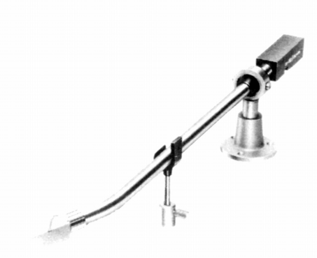

DA-302

■価格 25,000円■型式 スタティックバランス型■全長 363�o■実行長 282�o■オーバー・ハング 12.5�o■針圧範囲 2.5gに固定■アーム高さ 37〜52�o■アームベース穴 ■アンチスケートディバイス■アームリフター ■ラテラルバランサー■カートリッジ自重■線間容量 40pF■発売 1966年4月■販売終了 1978〜79年■備考 DL-103専用アーム他に重量を調整したDL-107専用シェルあり
DENONのインデックスヘ